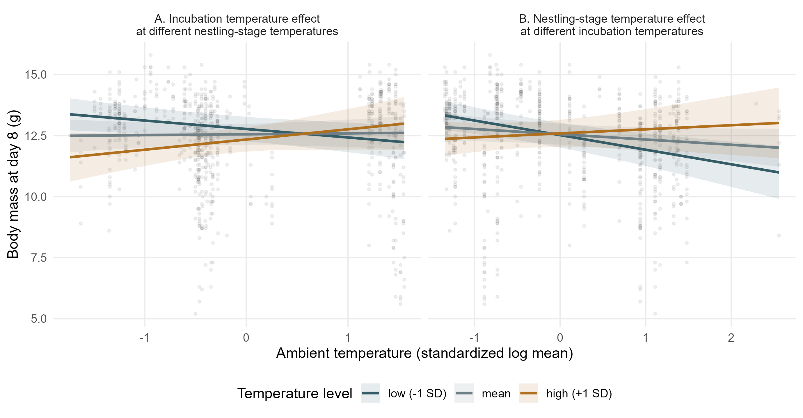
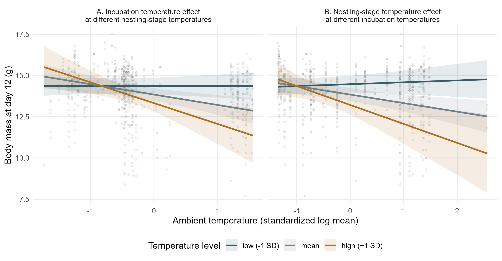
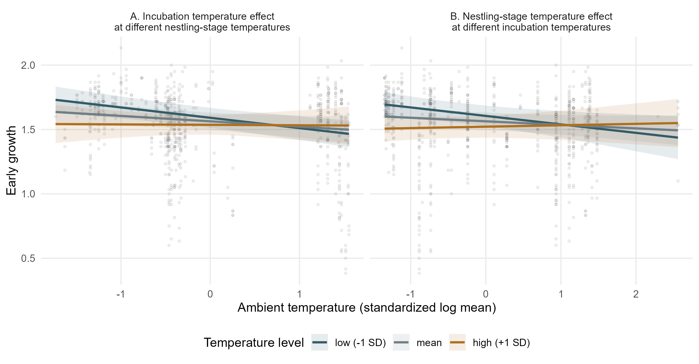
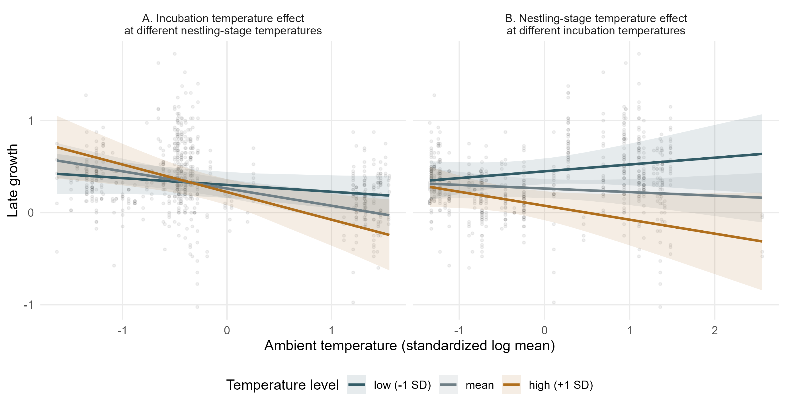
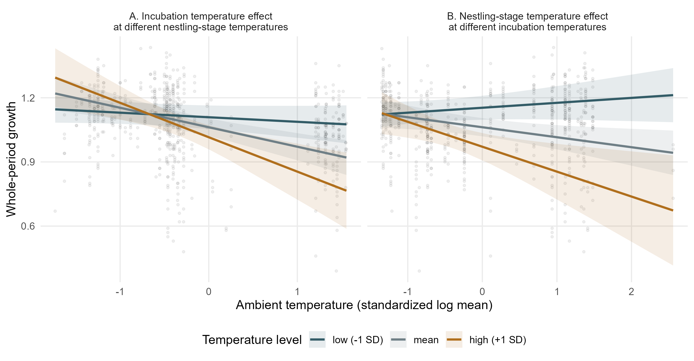
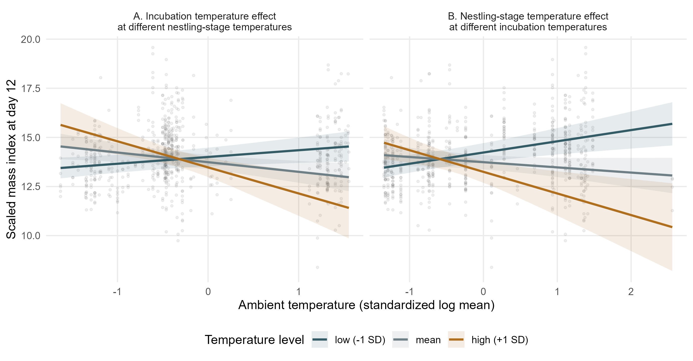
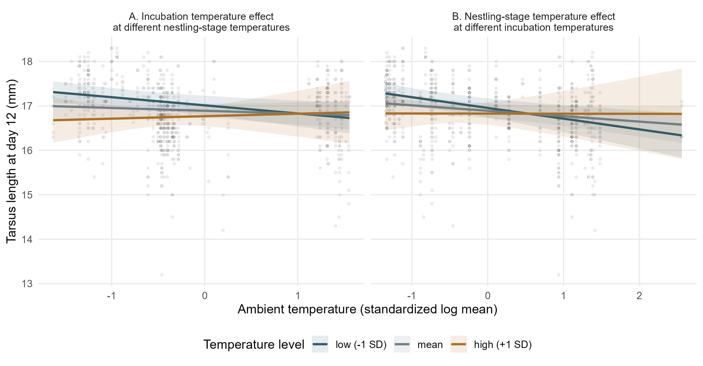

response ~ EXP.INC + EXP.NEST + incubation_temperature_sc * nestling_temperature_sc + SEX + BS_sc + (1|F_RING) + (1|YEAR)Ambient-temperature interaction models
This page addresses a separate question from the primary experiment results: whether measured ambient temperature is associated with offspring traits and survival.
The aim is not to replace the experimental treatment models, but to show whether natural variation in ambient temperature during incubation and the nestling period is related to the same responses. These models include the treatment predictors and then add the interaction between measured incubation-period and nestling-period ambient temperature:
Day-2 mass is not included because it occurs before most of the nestling-period treatment.
Collinearity check
Before interpreting the ambient-temperature interaction models, we check whether the two measured temperature predictors are strongly correlated and whether the fitted models show problematic collinearity.
The Pearson correlation between `incubation_temperature_sc` and `nestling_temperature_sc` is `r = -0.062` based on `n = 840` complete records. This indicates no strong linear correlation between the two measured ambient-temperature variables.
The largest VIF in the ambient-temperature interaction models is `4.29`. The highest values occur for the interaction term, which is expected in interaction models. Values remain below the common cautionary threshold of 5, so there is no evidence of severe collinearity.| Response | Term | VIF | SE inflation factor |
|---|---|---|---|
| Day-8 body mass | incubation_temperature_sc | 1.59 | 1.26 |
| Day-8 body mass | nestling_temperature_sc | 1.30 | 1.14 |
| Day-8 body mass | incubation_temperature_sc:nestling_temperature_sc | 1.72 | 1.31 |
| Day-12 body mass | incubation_temperature_sc | 2.67 | 1.63 |
| Day-12 body mass | nestling_temperature_sc | 2.65 | 1.63 |
| Day-12 body mass | incubation_temperature_sc:nestling_temperature_sc | 4.17 | 2.04 |
| Early growth | incubation_temperature_sc | 1.41 | 1.19 |
| Early growth | nestling_temperature_sc | 1.17 | 1.08 |
| Early growth | incubation_temperature_sc:nestling_temperature_sc | 1.44 | 1.20 |
| Late growth | incubation_temperature_sc | 1.72 | 1.31 |
| Late growth | nestling_temperature_sc | 1.15 | 1.07 |
| Late growth | incubation_temperature_sc:nestling_temperature_sc | 1.68 | 1.29 |
| Whole-period growth | incubation_temperature_sc | 2.73 | 1.65 |
| Whole-period growth | nestling_temperature_sc | 2.69 | 1.64 |
| Whole-period growth | incubation_temperature_sc:nestling_temperature_sc | 4.29 | 2.07 |
| Day-12 scaled mass index | incubation_temperature_sc | 2.69 | 1.64 |
| Day-12 scaled mass index | nestling_temperature_sc | 2.63 | 1.62 |
| Day-12 scaled mass index | incubation_temperature_sc:nestling_temperature_sc | 4.17 | 2.04 |
| Day-12 tarsus length | incubation_temperature_sc | 2.68 | 1.64 |
| Day-12 tarsus length | nestling_temperature_sc | 2.63 | 1.62 |
| Day-12 tarsus length | incubation_temperature_sc:nestling_temperature_sc | 4.15 | 2.04 |
| Day-12 survival | incubation_temperature_sc | 1.32 | 1.15 |
| Day-12 survival | nestling_temperature_sc | 1.14 | 1.07 |
| Day-12 survival | incubation_temperature_sc:nestling_temperature_sc | 1.25 | 1.12 |
Interaction terms
| Response | Interaction term | Estimate | SE | z | p |
|---|---|---|---|---|---|
| Day-8 body mass | incubation_temperature_sc:nestling_temperature_sc | 0.382 | 0.158 | 2.418 | 0.0156 |
| Day-12 body mass | incubation_temperature_sc:nestling_temperature_sc | -0.631 | 0.257 | -2.455 | 0.0141 |
| Early growth | incubation_temperature_sc:nestling_temperature_sc | 0.038 | 0.021 | 1.864 | 0.0624 |
| Late growth | incubation_temperature_sc:nestling_temperature_sc | -0.113 | 0.065 | -1.727 | 0.0842 |
| Whole-period growth | incubation_temperature_sc:nestling_temperature_sc | -0.070 | 0.028 | -2.513 | 0.0120 |
| Day-12 scaled mass index | incubation_temperature_sc:nestling_temperature_sc | -0.836 | 0.241 | -3.467 | 0.0005 |
| Day-12 tarsus length | incubation_temperature_sc:nestling_temperature_sc | 0.120 | 0.110 | 1.090 | 0.2757 |
| Day-12 survival | incubation_temperature_sc:nestling_temperature_sc | -0.382 | 0.441 | -0.865 | 0.3869 |
Response-level models
For each response, the section below shows the fitted ambient-temperature interaction model, the saved model summary, and the corresponding prediction figure. The prediction figure is the main visual interpretation. Panel A shows the incubation-temperature effect at low, mean, and high nestling-stage temperature. Panel B shows the nestling-stage temperature effect at low, mean, and high incubation temperature. Lines show population-level model predictions, shaded ribbons show 95% confidence intervals, and grey points show raw observations.
Day-8 body mass
Model: D8_MASS ~ EXP.INC + EXP.NEST + incubation_temperature_sc * nestling_temperature_sc + SEX + BS_sc + (1|F_RING) + (1|YEAR)
Saved model summary
Show saved model summary
Family: gaussian ( identity )
Formula:
D8_MASS ~ EXP.INC + EXP.NEST + incubation_temperature_sc * nestling_temperature_sc +
SEX + BS_sc + (1 | F_RING) + (1 | YEAR)
Data: model_data
AIC BIC logLik -2*log(L) df.resid
2563.5 2614.3 -1270.8 2541.5 735
Random effects:
Conditional model:
Groups Name Variance Std.Dev.
F_RING (Intercept) 1.955e+00 1.3981199
YEAR (Intercept) 1.423e-08 0.0001193
Residual 1.137e+00 1.0661745
Number of obs: 746, groups: F_RING, 148; YEAR, 4
Dispersion estimate for gaussian family (sigma^2): 1.14
Conditional model:
Estimate Std. Error z value
(Intercept) 12.55664 0.21768 57.68
EXP.INCHeated -0.52524 0.24533 -2.14
EXP.NESTHeated 0.04632 0.24508 0.19
incubation_temperature_sc 0.03611 0.16250 0.22
nestling_temperature_sc -0.21519 0.13011 -1.65
SEXM 0.06985 0.08652 0.81
BS_sc -0.06567 0.11761 -0.56
incubation_temperature_sc:nestling_temperature_sc 0.38206 0.15803 2.42
Pr(>|z|)
(Intercept) <2e-16 ***
EXP.INCHeated 0.0323 *
EXP.NESTHeated 0.8501
incubation_temperature_sc 0.8242
nestling_temperature_sc 0.0981 .
SEXM 0.4195
BS_sc 0.5766
incubation_temperature_sc:nestling_temperature_sc 0.0156 *
---
Signif. codes: 0 '***' 0.001 '**' 0.01 '*' 0.05 '.' 0.1 ' ' 1Prediction figure

Lines show population-level model predictions. In panel A, lines are estimated at low (-1 SD), mean, and high (+1 SD) nestling-stage temperature. In panel B, lines are estimated at low, mean, and high incubation temperature. Shaded ribbons show 95% confidence intervals. Grey points show raw observations.
Day-12 body mass
Model: D12_MASS ~ EXP.INC + EXP.NEST + incubation_temperature_sc * nestling_temperature_sc + SEX + BS_sc + (1|F_RING) + (1|YEAR)
Saved model summary
Show saved model summary
Family: gaussian ( identity )
Formula:
D12_MASS ~ EXP.INC + EXP.NEST + incubation_temperature_sc * nestling_temperature_sc +
SEX + BS_sc + (1 | F_RING) + (1 | YEAR)
Data: model_data
AIC BIC logLik -2*log(L) df.resid
2084.4 2134.3 -1031.2 2062.4 676
Random effects:
Conditional model:
Groups Name Variance Std.Dev.
F_RING (Intercept) 1.554e+00 1.247e+00
YEAR (Intercept) 2.906e-09 5.391e-05
Residual 7.178e-01 8.472e-01
Number of obs: 687, groups: F_RING, 144; YEAR, 4
Dispersion estimate for gaussian family (sigma^2): 0.718
Conditional model:
Estimate Std. Error z value
(Intercept) 13.84816 0.19861 69.72
EXP.INCHeated -0.21055 0.22033 -0.96
EXP.NESTHeated 0.09643 0.21994 0.44
incubation_temperature_sc -0.63057 0.19752 -3.19
nestling_temperature_sc -0.51806 0.17321 -2.99
SEXM 0.13953 0.07294 1.91
BS_sc -0.02678 0.10537 -0.25
incubation_temperature_sc:nestling_temperature_sc -0.63144 0.25718 -2.46
Pr(>|z|)
(Intercept) < 2e-16 ***
EXP.INCHeated 0.33927
EXP.NESTHeated 0.66108
incubation_temperature_sc 0.00141 **
nestling_temperature_sc 0.00278 **
SEXM 0.05575 .
BS_sc 0.79936
incubation_temperature_sc:nestling_temperature_sc 0.01408 *
---
Signif. codes: 0 '***' 0.001 '**' 0.01 '*' 0.05 '.' 0.1 ' ' 1Prediction figure

Lines show population-level model predictions. In panel A, lines are estimated at low (-1 SD), mean, and high (+1 SD) nestling-stage temperature. In panel B, lines are estimated at low, mean, and high incubation temperature. Shaded ribbons show 95% confidence intervals. Grey points show raw observations.
Early growth
Model: Early.g ~ EXP.INC + EXP.NEST + incubation_temperature_sc * nestling_temperature_sc + SEX + BS_sc + (1|F_RING) + (1|YEAR)
Saved model summary
Show saved model summary
Family: gaussian ( identity )
Formula:
Early.g ~ EXP.INC + EXP.NEST + incubation_temperature_sc * nestling_temperature_sc +
SEX + BS_sc + (1 | F_RING) + (1 | YEAR)
Data: model_data
AIC BIC logLik -2*log(L) df.resid
-543.1 -492.6 282.6 -565.1 717
Random effects:
Conditional model:
Groups Name Variance Std.Dev.
F_RING (Intercept) 5.071e-02 2.252e-01
YEAR (Intercept) 3.778e-11 6.146e-06
Residual 1.541e-02 1.241e-01
Number of obs: 728, groups: F_RING, 145; YEAR, 4
Dispersion estimate for gaussian family (sigma^2): 0.0154
Conditional model:
Estimate Std. Error z value
(Intercept) 1.564038 0.034518 45.31
EXP.INCHeated -0.099505 0.038857 -2.56
EXP.NESTHeated -0.009072 0.038787 -0.23
incubation_temperature_sc -0.041860 0.024094 -1.74
nestling_temperature_sc -0.027398 0.018653 -1.47
SEXM 0.028410 0.010267 2.77
BS_sc -0.016419 0.018412 -0.89
incubation_temperature_sc:nestling_temperature_sc 0.038462 0.020636 1.86
Pr(>|z|)
(Intercept) < 2e-16 ***
EXP.INCHeated 0.01044 *
EXP.NESTHeated 0.81507
incubation_temperature_sc 0.08232 .
nestling_temperature_sc 0.14188
SEXM 0.00565 **
BS_sc 0.37251
incubation_temperature_sc:nestling_temperature_sc 0.06235 .
---
Signif. codes: 0 '***' 0.001 '**' 0.01 '*' 0.05 '.' 0.1 ' ' 1Prediction figure

Lines show population-level model predictions. In panel A, lines are estimated at low (-1 SD), mean, and high (+1 SD) nestling-stage temperature. In panel B, lines are estimated at low, mean, and high incubation temperature. Shaded ribbons show 95% confidence intervals. Grey points show raw observations.
Late growth
Model: Late.g ~ EXP.INC + EXP.NEST + incubation_temperature_sc * nestling_temperature_sc + SEX + BS_sc + (1|F_RING) + (1|YEAR)
Saved model summary
Show saved model summary
Family: gaussian ( identity )
Formula:
Late.g ~ EXP.INC + EXP.NEST + incubation_temperature_sc * nestling_temperature_sc +
SEX + BS_sc + (1 | F_RING) + (1 | YEAR)
Data: model_data
AIC BIC logLik -2*log(L) df.resid
115.9 165.6 -46.9 93.9 666
Random effects:
Conditional model:
Groups Name Variance Std.Dev.
F_RING (Intercept) 0.067899 0.26057
YEAR (Intercept) 0.003599 0.05999
Residual 0.043291 0.20807
Number of obs: 677, groups: F_RING, 141; YEAR, 4
Dispersion estimate for gaussian family (sigma^2): 0.0433
Conditional model:
Estimate Std. Error z value
(Intercept) 0.26279 0.05238 5.017
EXP.INCHeated 0.04094 0.04777 0.857
EXP.NESTHeated 0.02547 0.04734 0.538
incubation_temperature_sc -0.18680 0.05369 -3.479
nestling_temperature_sc -0.03890 0.04954 -0.785
SEXM 0.01295 0.01791 0.723
BS_sc -0.01337 0.02315 -0.578
incubation_temperature_sc:nestling_temperature_sc -0.11277 0.06532 -1.727
Pr(>|z|)
(Intercept) 5.26e-07 ***
EXP.INCHeated 0.391394
EXP.NESTHeated 0.590611
incubation_temperature_sc 0.000503 ***
nestling_temperature_sc 0.432322
SEXM 0.469732
BS_sc 0.563485
incubation_temperature_sc:nestling_temperature_sc 0.084238 .
---
Signif. codes: 0 '***' 0.001 '**' 0.01 '*' 0.05 '.' 0.1 ' ' 1Prediction figure

Lines show population-level model predictions. In panel A, lines are estimated at low (-1 SD), mean, and high (+1 SD) nestling-stage temperature. In panel B, lines are estimated at low, mean, and high incubation temperature. Shaded ribbons show 95% confidence intervals. Grey points show raw observations.
Whole-period growth
Model: Growth ~ EXP.INC + EXP.NEST + incubation_temperature_sc * nestling_temperature_sc + SEX + BS_sc + (1|F_RING) + (1|YEAR)
Saved model summary
Show saved model summary
Family: gaussian ( identity )
Formula:
Growth ~ EXP.INC + EXP.NEST + incubation_temperature_sc * nestling_temperature_sc +
SEX + BS_sc + (1 | F_RING) + (1 | YEAR)
Data: model_data
AIC BIC logLik -2*log(L) df.resid
-1025.9 -976.5 524.0 -1047.9 653
Random effects:
Conditional model:
Groups Name Variance Std.Dev.
F_RING (Intercept) 1.776e-02 1.333e-01
YEAR (Intercept) 1.156e-11 3.401e-06
Residual 7.166e-03 8.465e-02
Number of obs: 664, groups: F_RING, 140; YEAR, 4
Dispersion estimate for gaussian family (sigma^2): 0.00717
Conditional model:
Estimate Std. Error z value
(Intercept) 1.062512 0.021502 49.41
EXP.INCHeated -0.025486 0.023746 -1.07
EXP.NESTHeated -0.004167 0.023692 -0.18
incubation_temperature_sc -0.091101 0.021267 -4.28
nestling_temperature_sc -0.046733 0.018705 -2.50
SEXM 0.018365 0.007430 2.47
BS_sc -0.008471 0.011290 -0.75
incubation_temperature_sc:nestling_temperature_sc -0.069783 0.027766 -2.51
Pr(>|z|)
(Intercept) < 2e-16 ***
EXP.INCHeated 0.2832
EXP.NESTHeated 0.8604
incubation_temperature_sc 1.84e-05 ***
nestling_temperature_sc 0.0125 *
SEXM 0.0134 *
BS_sc 0.4531
incubation_temperature_sc:nestling_temperature_sc 0.0120 *
---
Signif. codes: 0 '***' 0.001 '**' 0.01 '*' 0.05 '.' 0.1 ' ' 1Prediction figure

Lines show population-level model predictions. In panel A, lines are estimated at low (-1 SD), mean, and high (+1 SD) nestling-stage temperature. In panel B, lines are estimated at low, mean, and high incubation temperature. Shaded ribbons show 95% confidence intervals. Grey points show raw observations.
Day-12 scaled mass index
Model: D12_SMI ~ EXP.INC + EXP.NEST + incubation_temperature_sc * nestling_temperature_sc + SEX + BS_sc + (1|F_RING) + (1|YEAR)
Saved model summary
Show saved model summary
Family: gaussian ( identity )
Formula:
D12_SMI ~ EXP.INC + EXP.NEST + incubation_temperature_sc * nestling_temperature_sc +
SEX + BS_sc + (1 | F_RING) + (1 | YEAR)
Data: model_data
AIC BIC logLik -2*log(L) df.resid
2236.0 2285.7 -1107.0 2214.0 668
Random effects:
Conditional model:
Groups Name Variance Std.Dev.
F_RING (Intercept) 1.233e+00 1.110e+00
YEAR (Intercept) 4.151e-09 6.443e-05
Residual 1.038e+00 1.019e+00
Number of obs: 679, groups: F_RING, 141; YEAR, 4
Dispersion estimate for gaussian family (sigma^2): 1.04
Conditional model:
Estimate Std. Error z value
(Intercept) 13.74329 0.18599 73.89
EXP.INCHeated 0.13263 0.20595 0.64
EXP.NESTHeated 0.13163 0.20554 0.64
incubation_temperature_sc -0.49180 0.18491 -2.66
nestling_temperature_sc -0.26480 0.16180 -1.64
SEXM 0.26489 0.08736 3.03
BS_sc -0.19269 0.09948 -1.94
incubation_temperature_sc:nestling_temperature_sc -0.83581 0.24107 -3.47
Pr(>|z|)
(Intercept) < 2e-16 ***
EXP.INCHeated 0.519575
EXP.NESTHeated 0.521922
incubation_temperature_sc 0.007823 **
nestling_temperature_sc 0.101725
SEXM 0.002427 **
BS_sc 0.052757 .
incubation_temperature_sc:nestling_temperature_sc 0.000526 ***
---
Signif. codes: 0 '***' 0.001 '**' 0.01 '*' 0.05 '.' 0.1 ' ' 1Prediction figure

Lines show population-level model predictions. In panel A, lines are estimated at low (-1 SD), mean, and high (+1 SD) nestling-stage temperature. In panel B, lines are estimated at low, mean, and high incubation temperature. Shaded ribbons show 95% confidence intervals. Grey points show raw observations.
Day-12 tarsus length
Model: D12_RTARS ~ EXP.INC + EXP.NEST + incubation_temperature_sc * nestling_temperature_sc + SEX + BS_sc + (1|F_RING) + (1|YEAR)
Saved model summary
Show saved model summary
Family: gaussian ( identity )
Formula: D12_RTARS ~ EXP.INC + EXP.NEST + incubation_temperature_sc *
nestling_temperature_sc + SEX + BS_sc + (1 | F_RING) + (1 | YEAR)
Data: model_data
AIC BIC logLik -2*log(L) df.resid
1087.5 1137.2 -532.7 1065.5 669
Random effects:
Conditional model:
Groups Name Variance Std.Dev.
F_RING (Intercept) 2.627e-01 5.126e-01
YEAR (Intercept) 5.344e-10 2.312e-05
Residual 1.850e-01 4.301e-01
Number of obs: 680, groups: F_RING, 141; YEAR, 4
Dispersion estimate for gaussian family (sigma^2): 0.185
Conditional model:
Estimate Std. Error z value
(Intercept) 16.89000 0.08443 200.05
EXP.INCHeated -0.16191 0.09377 -1.73
EXP.NESTHeated 0.03982 0.09359 0.43
incubation_temperature_sc -0.06368 0.08412 -0.76
nestling_temperature_sc -0.12206 0.07360 -1.66
SEXM -0.04796 0.03690 -1.30
BS_sc 0.04841 0.04516 1.07
incubation_temperature_sc:nestling_temperature_sc 0.11954 0.10966 1.09
Pr(>|z|)
(Intercept) <2e-16 ***
EXP.INCHeated 0.0842 .
EXP.NESTHeated 0.6705
incubation_temperature_sc 0.4490
nestling_temperature_sc 0.0973 .
SEXM 0.1936
BS_sc 0.2838
incubation_temperature_sc:nestling_temperature_sc 0.2757
---
Signif. codes: 0 '***' 0.001 '**' 0.01 '*' 0.05 '.' 0.1 ' ' 1Prediction figure

Lines show population-level model predictions. In panel A, lines are estimated at low (-1 SD), mean, and high (+1 SD) nestling-stage temperature. In panel B, lines are estimated at low, mean, and high incubation temperature. Shaded ribbons show 95% confidence intervals. Grey points show raw observations.
Day-12 survival
Model: D12_SURV ~ EXP.INC + EXP.NEST + incubation_temperature_sc * nestling_temperature_sc + SEX + BS_sc + (1|F_RING) + (1|YEAR)
Saved model summary
Show saved model summary
Family: binomial ( logit )
Formula:
D12_SURV_bin ~ EXP.INC + EXP.NEST + incubation_temperature_sc *
nestling_temperature_sc + SEX + BS_sc + (1 | F_RING) + (1 | YEAR)
Data: surv_dat
AIC BIC logLik -2*log(L) df.resid
482.6 529.9 -231.3 462.6 830
Random effects:
Conditional model:
Groups Name Variance Std.Dev.
F_RING (Intercept) 1.604e+01 4.0055158
YEAR (Intercept) 2.238e-09 0.0000473
Number of obs: 840, groups: F_RING, 161; YEAR, 4
Conditional model:
Estimate Std. Error z value
(Intercept) 4.14837 0.84955 4.883
EXP.INCHeated -0.49323 0.78823 -0.626
EXP.NESTHeated 0.91115 0.79083 1.152
incubation_temperature_sc -2.82874 0.54840 -5.158
nestling_temperature_sc -0.36724 0.39777 -0.923
SEXM 0.10704 0.32455 0.330
BS_sc 0.09768 0.36541 0.267
incubation_temperature_sc:nestling_temperature_sc -0.38196 0.44142 -0.865
Pr(>|z|)
(Intercept) 1.04e-06 ***
EXP.INCHeated 0.531
EXP.NESTHeated 0.249
incubation_temperature_sc 2.49e-07 ***
nestling_temperature_sc 0.356
SEXM 0.742
BS_sc 0.789
incubation_temperature_sc:nestling_temperature_sc 0.387
---
Signif. codes: 0 '***' 0.001 '**' 0.01 '*' 0.05 '.' 0.1 ' ' 1Prediction figure
Prediction figure is not available for this response.